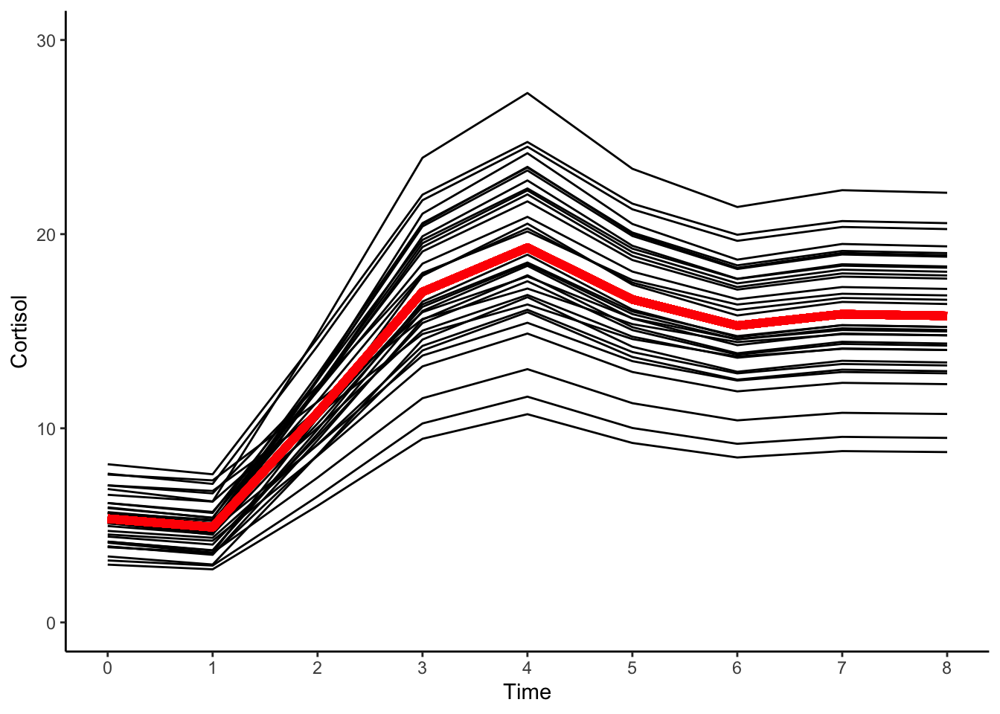

12.6 Latent Basis (Cortisol)
Another model we can consider is the latent basis growth model. The latent basis growth model is a flexible model that can approximate a variety of nonlinear trajectories.
12.6.1 Equation
We can write the latent basis model as
\[\begin{align} y_{ti} = & \beta_{0i} + \beta_{1i}\text{time}_{LB} + e_{ti}, & e_{ti} \sim \mathcal{N}(0,\sigma^{2}_{e}) && \: [\text{Level 1}] \\ \beta_{0i} = & \gamma_{00} + u_{0i}, & u_{0i} \sim \mathcal{N}(0,\sigma^{2}_{u0}) && \: [\text{Level 2}] \\ \beta_{1i} = & \gamma_{10} + u_{1i}, & u_{1i} \sim \mathcal{N}(0,\sigma^{2}_{u1}) && \: \\ y_{ti} = & \gamma_{00} + \gamma_{10}\text{time}_{LB} + u_{0i} + u_{1i}\text{time} + e_{ti}, & && \: [\text{Combined}] \end{align}\]
where
\[\begin{align} \text{time}_{LB} = \{0, a_{1},a_{2},a_{3},a_{4},a_{5},a_{6}, a_{7},1\} \end{align}\]
and
- \(y_{ti}\) is the repeated measures score for individual \(i\) at time \(t\)
- \(\beta_{0i}\) is the random intercept for individual \(i\)
- \(\beta_{1i}\) is the shape factor for individual \(i\)
- \(\text{time}_{LB}\) is the basis coefficient at time \(t\)
- basis coefficients describe the pattern of change w.r.t time.
- \(e_{it}\) is the time-specific residual score
- \(\gamma_{00}\) is the fixed-effect for the intercept
- \(\gamma_{10}\) is the fixed-effect for the shape factor
- \(u_{0i}\) is individual \(i\)s deviation from the intercept fixed effect
- \(u_{1i}\) is individual \(i\)s deviation from the shape fixed effect
12.6.2 Fit Model
#creating time-dummy variables
cortisol_long$time0 <- ifelse(cortisol_long$time ==0, 1, 0)
cortisol_long$time1 <- ifelse(cortisol_long$time ==1, 1, 0)
cortisol_long$time2 <- ifelse(cortisol_long$time ==2, 1, 0)
cortisol_long$time3 <- ifelse(cortisol_long$time ==3, 1, 0)
cortisol_long$time4 <- ifelse(cortisol_long$time ==4, 1, 0)
cortisol_long$time5 <- ifelse(cortisol_long$time ==5, 1, 0)
cortisol_long$time6 <- ifelse(cortisol_long$time ==6, 1, 0)
cortisol_long$time7 <- ifelse(cortisol_long$time ==7, 1, 0)
cortisol_long$time8 <- ifelse(cortisol_long$time ==8, 1, 0)
#latent basis model
cort_latentb <- nlme(
cort ~ gamma_00 + time0*(gamma_10*0) +
time1*(gamma_10*a1) +
time2*(gamma_10*a2) +
time3*(gamma_10*a3) +
time4*(gamma_10*a4) +
time5*(gamma_10*a5) +
time6*(gamma_10*a6) +
time7*(gamma_10*a7) +
time8*(gamma_10*1),
fixed = gamma_00 + gamma_10 + a1 + a2 + a3 + a4 + a5 + a6 + a7 ~ 1,
random = gamma_00 + gamma_10 ~ 1,
groups =~ id,
start = c(gamma_00=5.5,gamma_10=11.5,a1=.3,
a2=.4, a3=.5, a4=.6,
a5=.7, a6=.8, a7=.9),
data = cortisol_long,
na.action = na.exclude,
control = lmeControl(maxIter = 1e8, msMaxIter = 1e8)
)
summary(cort_latentb)## Nonlinear mixed-effects model fit by maximum likelihood
## Model: cort ~ gamma_00 + time0 * (gamma_10 * 0) + time1 * (gamma_10 * a1) + time2 * (gamma_10 * a2) + time3 * (gamma_10 * a3) + time4 * (gamma_10 * a4) + time5 * (gamma_10 * a5) + time6 * (gamma_10 * a6) + time7 * (gamma_10 * a7) + time8 * (gamma_10 * 1)
## Data: cortisol_long
## AIC BIC logLik
## 1569.164 1617.571 -771.5821
##
## Random effects:
## Formula: list(gamma_00 ~ 1, gamma_10 ~ 1)
## Level: id
## Structure: General positive-definite, Log-Cholesky parametrization
## StdDev Corr
## gamma_00 1.698578 gmm_00
## gamma_10 2.735103 0.001
## Residual 2.529224
##
## Fixed effects: gamma_00 + gamma_10 + a1 + a2 + a3 + a4 + a5 + a6 + a7 ~ 1
## Value Std.Error DF t-value p-value
## gamma_00 5.342011 0.5207451 264 10.258399 0.0000
## gamma_10 10.447225 0.7660285 264 13.638168 0.0000
## a1 -0.041829 0.0582607 264 -0.717961 0.4734
## a2 0.522586 0.0500425 264 10.442847 0.0000
## a3 1.118113 0.0611387 264 18.288132 0.0000
## a4 1.336652 0.0689221 264 19.393645 0.0000
## a5 1.081029 0.0599665 264 18.027217 0.0000
## a6 0.951968 0.0562971 264 16.909722 0.0000
## a7 1.008691 0.0578269 264 17.443266 0.0000
## Correlation:
## gmm_00 gmm_10 a1 a2 a3 a4 a5 a6
## gamma_10 -0.455
## a1 -0.581 0.404
## a2 -0.314 -0.023 0.262
## a3 0.056 -0.446 -0.066 0.287
## a4 0.151 -0.534 -0.150 0.261 0.589
## a5 0.037 -0.427 -0.050 0.291 0.540 0.577
## a6 -0.034 -0.355 0.013 0.306 0.501 0.526 0.495
## a7 -0.002 -0.388 -0.015 0.300 0.519 0.550 0.512 0.481
##
## Standardized Within-Group Residuals:
## Min Q1 Med Q3 Max
## -2.4004317 -0.6084323 -0.1077279 0.5806294 2.8252173
##
## Number of Observations: 306
## Number of Groups: 34VarCorr(cort_latentb)## id = pdLogChol(list(gamma_00 ~ 1,gamma_10 ~ 1))
## Variance StdDev Corr
## gamma_00 2.885168 1.698578 gmm_00
## gamma_10 7.480787 2.735103 0.001
## Residual 6.396974 2.52922412.6.3 Predicted Trajectories
#obtaining predicted scores for individuals
cortisol_long$pred_latentb <- predict(cort_latentb)
#obtaining predicted scores for prototype
cortisol_long$proto_latentb <- predict(cort_latentb, level=0)
#plotting predicted trajectories
#intraindividual change trajetories
ggplot(data = cortisol_long, aes(x = time, y = pred_latentb, group = id)) +
#geom_point(color="black") +
geom_line(color="black") +
geom_line(aes(x = time, y = proto_latentb), color="red",size=2) +
xlab("Time") +
ylab("Cortisol") + ylim(0,30) +
scale_x_continuous(breaks=seq(0,8,by=1)) +
theme_classic()
12.6.4 Interpretation
In the latent basis model, rather than fixing the shape coefficients like in the linear model (e.g.\(t=\{1,2,3,4,\dots,T\}\)), we estimate the shape directly from the data.
The mean intercept level of cortisol was \(5.3\), meaning that on average individual development of cortisol proceeded from this initial baseline level, taken at the outset of the experiment.
The average total amount of growth is given by the mean value of \(10.4\).
From the predicted trajectories we can see that all individuals cortisol levels rise and fall over time in the same way, only the extent of the rise and fall (and the starting point) differs between persons.
In other words, the underlying theory suggests that, from their individual baseline levels, the process of cortisol response proceeds via the same nonlinear process for all individuals, with individuals only differing in the amplitude of this response.